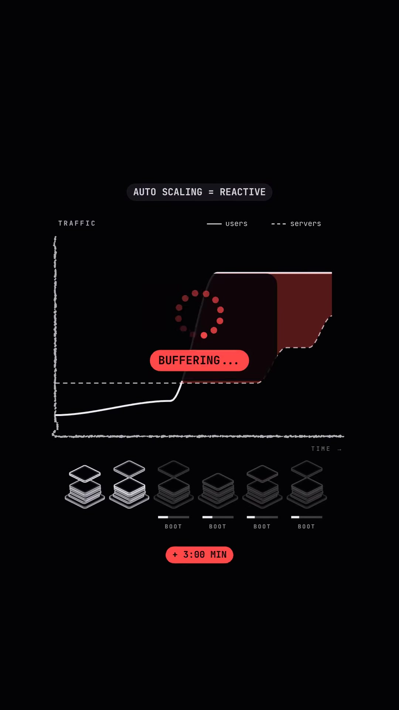
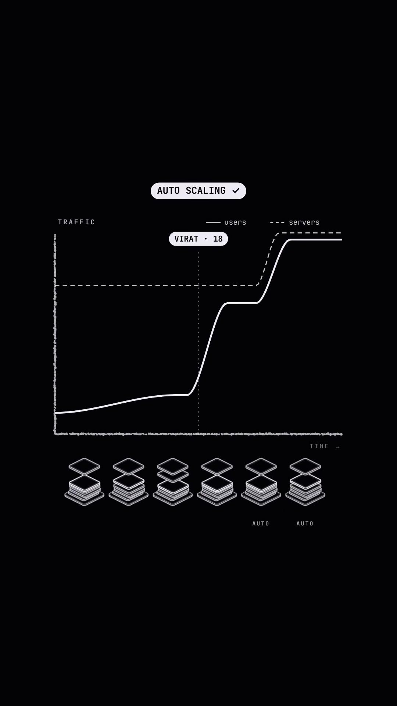
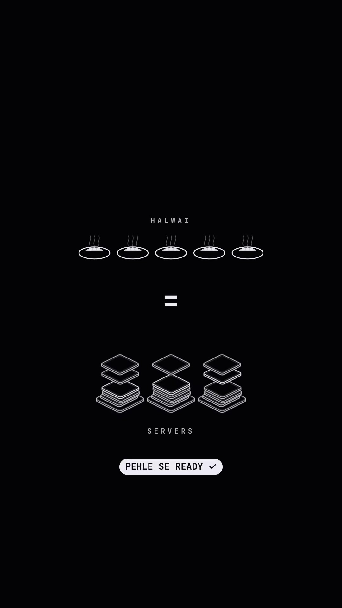

Executive Summary
In high-scale distributed systems interviews (such as designing Hotstar, JioCinema, or YouTube Live for a major cricket match), interviewers ask: "When Virat Kohli walks out to bat, 10 million concurrent users flood the live streaming platform in under 60 seconds. How do you design the infrastructure to prevent catastrophic downtime?"
Most candidates answer: "We configure Horizontal Pod Autoscaling (HPA) in Kubernetes or AWS Auto Scaling Groups (ASG)." This answer leads to immediate failure. Auto-scaling is inherently reactive. It requires metrics collection, threshold breach evaluation, VM provisioning, container image pulling, and JVM/Node warm-up—a process that takes 2 to 5 minutes. During sudden 10-second traffic surges, reactive auto-scaling arrives long after the database connection pool has crashed and cascading 504 Gateway Timeouts have occurred.
Core Visual Demonstrations



The Real-World Analogy: The "Halwai" Principle
"Relying solely on reactive auto-scaling during a known major event is like waiting for 500 wedding guests to arrive at the door before calling the caterer (halwai) to start cooking food. Smart hosts prepare the feast well in advance."
The Production Architecture for Sudden Flash Traffic
1. Scheduled Fleet Pre-Warming
Major traffic spikes in entertainment, sports, or flash sales (Black Friday, IPL, Super Bowl) are predictable in time. Rather than waiting for CPU thresholds:
- Scheduled Scaling Actions: Pre-scale Kubernetes node groups and serverless concurrency quotas 15 to 30 minutes prior to scheduled game start times.
- Connection Pool Pre-Heating: Initialize database connections, Redis socket pools, and JIT-compiled caches before opening ingress gates.
2. Edge CDN Shielding (Stale-While-Revalidate)
90% of user requests during a live sporting event are identical (video manifest files, current score ticker, static UI assets).
- Serve HLS / DASH video segment playlists from geographically distributed Edge CDNs (Akamai, Cloudflare).
- Use
Cache-Control: public, max-age=1, stale-while-revalidate=5to collapse 10,000,000 score queries into a single origin hit every second.
3. WebSocket / SSE Multiplexing
Never allow 10 million mobile apps to poll an HTTP /api/score endpoint every 3 seconds ($3.33 \text{ million requests/sec}$).
Instead, maintain persistent Server-Sent Events (SSE) or WebSocket connections terminated at lightweight edge proxy layers (e.g. Envoy or Nginx). When a ball is bowled, publish a single message to a Redis Pub/Sub or Apache Kafka topic, which broadcasts downward to all connected clients over existing open TCP sockets.
4. Autoscaling as the Backstop, Not the Plan
Auto-scaling should never be the primary defense against instantaneous flash spikes. Its proper architectural role is an elastic backstop: absorbing unforeseen baseline growth that exceeds pre-warmed estimates and gracefully de-provisioning expensive compute capacity once peak viewership subsides.